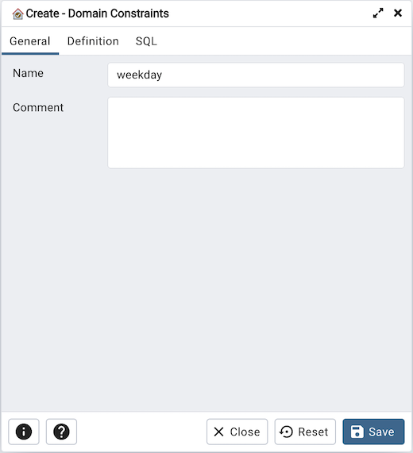
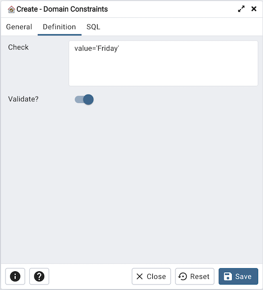
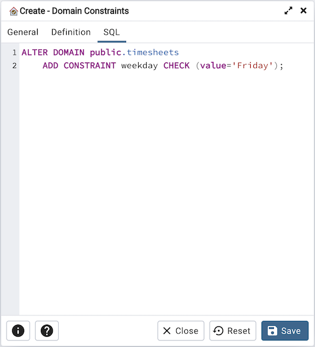

Domain Constraints Dialog¶
Use the Domain Constraints dialog to create or modify a domain constraint. A domain constraint confirms that the values provided for a domain meet a defined criteria. The Domain Constraints dialog implements options of the ALTER DOMAIN command.
The Domain Constraints dialog organizes the development of a domain constraint through the following dialog tabs: General and Definition. The SQL tab displays the SQL code generated by dialog selections.
Use the fields in the General tab to identify the domain constraint:
Use the Name field to add a descriptive name for the constraint. The name will be displayed in the pgAdmin tree control.
Store notes about the constraint in the Comment field.
Click the Definition tab to continue.
Use the fields in the Definition tab to define the domain constraint:
Use the Check field to provide a CHECK expression. A CHECK expression specifies a constraint that the domain must satisfy. A constraint must produce a Boolean result; include the key word VALUE to refer to the value being tested. Only those expressions that evaluate to TRUE or UNKNOWN will succeed. A CHECK expression cannot contain subqueries or refer to variables other than VALUE. If a domain has multiple CHECK constraints, they will be tested in alphabetical order.
Move the Validate? switch to the No position to mark the constraint NOT VALID. If the constraint is marked NOT VALID, the constraint will not be applied to existing column data. The default value is Yes.
Click the SQL tab to continue.
Your entries in the Domain Constraints dialog generate a SQL command (see an example below). Use the SQL tab for review; revisit or switch tabs to make any changes to the SQL command.
Example¶
The following is an example of the sql command generated by user selections in the Domain Constraints dialog:
The example shown demonstrates creating a domain constraint on the domain timesheets named weekday. It constrains a value equal to Friday.
Click the Info button (i) to access online help.
Click the Save button to save work.
Click the Close button to exit without saving work.
Click the Reset button to restore configuration parameters.